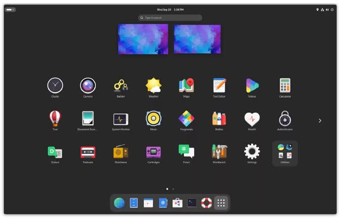

Melhores Desktop Environments para Arch Linux
1. GNOME
O GNOME oferece uma interface moderna, limpa e focada na produtividade. É ideal para usuários que preferem simplicidade e tecnologias modernas.
2. KDE Plasma

O KDE Plasma é altamente customizável e repleto de recursos, sendo perfeito para usuários avançados que gostam de personalizar sua experiência.
3. XFCE

XFCE é leve e eficiente, ideal para máquinas com recursos limitados ou para aqueles que preferem um ambiente de trabalho simples e funcional.
4. Cinnamon

Inspirado no GNOME 2, o Cinnamon é amigável e prático, ideal para quem vem de sistemas como Linux Mint ou Windows.
5. i3wm

Para os fãs de minimalismo, o i3wm é um gerenciador de janelas leve que oferece controle total do layout por atalhos de teclado.